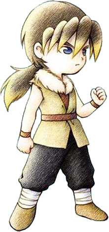

克里夫

四处漂泊，似乎是离家出走的。后期根据主角的选择，可能会离开矿石镇。
基本资料
生日：夏6日
住址：旅馆
人际关系：-
情敌：琳
进入教会10次+2500爱情度。
基本行程
| 状况 |
AM |
PM |
AM |
| 6 |
7 |
8 |
9 |
10 |
11 |
12 |
1 |
2 |
3 |
4 |
5 |
6 |
7 |
8 |
9 |
10 |
11 |
12 |
| 单身 |
一~日 |
旅馆2楼 |
教堂 |
旅馆2楼 |
| 单身① |
一~五、日 |
旅馆2楼 |
酒窖 |
果树园 |
教堂 |
旅馆2楼 |
| 六 |
旅馆2楼 |
旅馆1楼 |
教堂 |
旅馆2楼 |
| 婚后 |
一~五、日 |
自家 |
酒窖 |
果树园 |
教堂 |
自家 |
| 六 |
自家 |
旅馆1楼 |
教堂 |
自家 |
①：居民事件「果树园打工」发生后（克里夫在果树园工作）
喜欢与讨厌的东西
非常喜欢
- 哦，谢谢！你…挺好人的嘛。
咖喱饭、炖品、味噌汤、炒青菜、炒饭、锅烙、三文治、菜汁、菜奶、混合奶、酱烤茄子、凉拌青菜、炒鸡蛋、菜肉蛋卷、蛋炒饭、干酪、竹笋饭、蘑菇饭、松蘑饭、寿司、咖喱面包、煮鱼、什锦寿司、比萨、咖喱乌冬、天麸锣盖浇饭、天麸罗面、天麸罗、筑前煮、天麸罗饭
喜欢
- 真的给我？谢谢！
青瓜、草莓、番茄、玉米、菠萝、胡萝卜、野葡萄、苹果、牛奶（S、M、L、G、P、X）、奶酪（S、M、L、G、P、X）、葡萄酒、葡萄汁、巧克力、饭团、面包、年糕、ＳＵＧＤＷ苹果、ＨＭＳＧＢ苹果、ＡＥＰＦＥ苹果、野葡萄酒、腌青瓜、沙拉、果汁、调和汁、腌萝卜、烤马铃薯、草莓酱、草莓牛奶、番茄汁、爆米花、菠萝汁、南瓜布丁、地瓜布丁、烤地瓜、煮鸡蛋、布丁、热牛奶、奶酪蛋糕、苹果派、苹果烧、果酱面包、奶油烤面包、葡萄面包、土司、鱼片、乌冬烧、干烧伊面、赏月丸子、烤年糕、烤饭团、粥、大学芋、冰激淋、蛋糕、巧克力蛋糕、热蛋糕、消闲茶
普通
- 谢谢。
萝卜、马铃薯、包心菜、洋葱、南瓜、茄子、地瓜、菠菜、青椒、竹笋、蜂蜜、蘑菇、松蘑、温泉蛋、蛋（S、M、L、G、P、X）、蛋黄酱（S、M、L、G、P、X）、荞麦粉、果奶、番茄酱、玉米片、烤玉米、炖南瓜、苹果酱、葡萄酱、法国土司、乌冬、荞面条、鸡蛋饭、炸肉饼、鱼糕、曲奇、巧克力曲奇、消闲茶叶、小鱼、中鱼、大鱼、春的太阳、夏的太阳、秋的太阳、冬的太阳、三色花、月泪草、猫薄荷、青色奇幻草、红色奇幻草
讨厌
- 这是什么？
青色草、绿色草、红色草、黄色草、橙色草、紫色草、蓝色草、黑色草、白色草、肉丸粉、回力剂、大回力剂、醒神剂、大醒神剂、奶油、烫荞面、回复草、失败作（在碟子上的、饮品、盛在锅里的、点心、面包、乌冬）、羊毛（S、M、L、G、P、X）、毛线团（S、M、L、G、P、X）、废矿石、铜、银、金、秘银、奥里哈钢、金刚石、贤者之石、月亮石、紫水晶、沙漠玫瑰石、玛瑙、萤石、橄榄石、黄玉、红宝石、祖母绿、钻石、粉红钻石、亚历山大石、木材、饲料、鸡饲料、迷之石板、装信的瓶子
非常讨厌
- 你好恶心啊！拿那种东西给我看干嘛？ 毒蘑菇、油、小麦粉、咖喱粉、杂草、石、枝、海盗之宝、古代鱼化石、空罐、长靴、鱼骨、黄金木材
其他
恋爱事件
 |
| 时间 |
星期2、4 / AM10:00~PM1:00 |
| 地点 |
教堂 |
| 选项 |
第二个 |
 |
| 时间 |
星期1、3、5 、日 / PM4:00 |
| 地点 |
教堂 |
| 选项 |
第二个 |
 |
从这个事件开始克里夫必须在果园找到工作才会发生。
从牧场往图书馆方向的路向上跑，经过果树园时自动发生。 |
| 时间 |
星期1、3、5 /晴天 / PM3:00~PM4:00 |
| 地点 |
果树园 |
| 选项 |
第一个 |
 |
| 时间 |
星期2、4 / PM5:00~PM7:00 |
| 地点 |
果树园主人家 |
| 选项 |
第一个 |